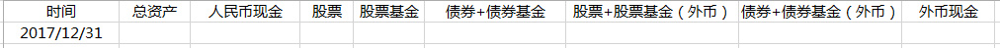

2017就要过去了。这一年发生不少事，有好的有坏的，也有虚惊一场的。无论如何，把它们都留在2017了。2018新的开始。希望所有人都健健康康。希望自己坚持健身效果明显。希望大家都赚很多钱。新年快乐！心想事成！ 2018你有什么心愿？
回复@拓跋笑笑:有缘的都看到了！//@拓跋笑笑:我错过了什么？再发一次，亲爱的e，来吧，来吧，秀18岁照片啦😄@ETF拯救世界:今年最后一天，抽空好好算算账吧。账户太多，乱七八糟。昨天扔了几大袋东西，今天弄清楚账户资产。清清爽爽的进入2018！ 